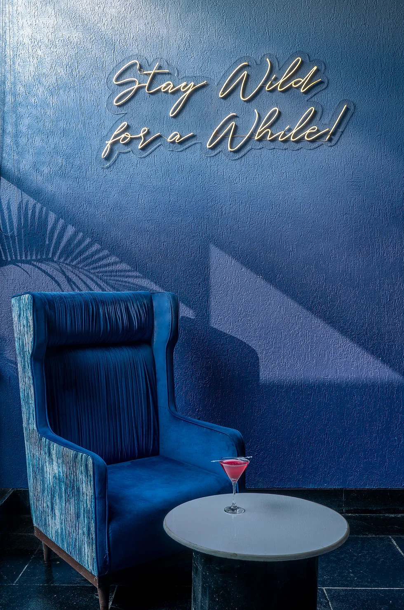

For Clients
See a practice that can carry a project from concept to built reality.
Case studies, services, process, and direct enquiry paths are arranged so serious leads can judge design strength and operating reliability without hunting for proof.

Delhi / Architecture / Interiors / Urban Development
Urban Mistrii is a multidisciplinary design studio creating residences, hospitality spaces, workplaces, and development-led environments with architectural clarity, material discipline, and execution-aware thinking.
For Clients
Case studies, services, process, and direct enquiry paths are arranged so serious leads can judge design strength and operating reliability without hunting for proof.
For Investors & Partners
Press visibility, typology range, execution thinking, and operating clarity make it easier to assess leadership, credibility, and long-term growth readiness.
For Team
Hiring, careers, and internal systems are being consolidated into one clearer digital home so the studio feels organized, ambitious, and worth growing with.
Established 2018
Our work begins with the specific conditions of each site, client, and community. From planning and architecture to interior details and material systems, the studio builds concepts strong enough to survive drawings, site realities, and daily use without losing atmosphere.
Selected Work
Browse by typology or move straight into deeper case studies.
Design Practice
Site-responsive planning, built form, facades, extensions, farmhouses, residences, and development-scale design thinking.
Homes, restaurants, bars, offices, retail, and hospitality interiors shaped through material palettes, lighting, furniture, and detailing.
Restaurant and experience-led spaces built around guest flow, mood, memory, and strong operational clarity.
Recent Signals
Recently celebrated in print through Interior Design Magazine coverage.
A structured street network and coherent blocks shaping an ordered yet flexible residential layout.
Additional hospitality projects to fold into the portfolio once final imagery and project facts are ready.
Published Projects
A Noida microbrewery and restro-bar by Urban Mistrii Studio, published by Architect and Interiors India for its tropical-jungle atmosphere and art-led hospitality language.
View press noteA sports bar concept in Goa featured by Architect and Interiors India, noted for immersive gaming energy, local references, and a more layered nightlife brief.
View press noteA Patparganj residence published by Architect and Interiors India as a bold, modern, playfully eclectic home designed around individuality and everyday function.
View studio noteA 2,000 sq ft children’s clinic in Gurugram published by The Architects Diary for its playful planning, tactile surfaces, and child-centric design approach.
View press noteA café-bar in Kailash Colony published by Architect and Interiors India for its intimate, maximalist mood and layered hospitality storytelling.
View studio noteThe same paediatric clinic also appeared on India Design World, highlighting its whimsical patterns, curvaceous furniture, and tactile surfaces.
View studio noteBuilt for Clarity
New visitors can understand the studio, the work, and the next action within a few scrolls on desktop or mobile.
Press, typologies, services, and project evidence sit closer to the top so the site feels established and decision-ready.
The public site and internal team operations experience now share a clearer structure, which supports the studio as it scales.
Studio
Founded by Ritika Rakhiani, Urban Mistrii works between architecture, interiors, and urban-scale thinking. The studio's process balances conceptual clarity with material discipline, allowing each project to develop its own identity without losing function or warmth.
Understand the site, client, use-case, and emotional register of the project.
Build a strong spatial narrative before moving into plans, sections, and material studies.
Resolve details, finishes, lighting, and furniture into one coherent experience.
Services
Concept design, planning, massing, facade language, drawing coordination, and site-led spatial strategy.
Homes, hospitality, retail, and workplaces resolved through layouts, materials, lighting, furniture, and styling.
Restaurants, cafes, bars, hotels, and experience-led environments designed around memory, movement, and mood.
Vendor coordination, design intent checks, finish schedules, and on-site decisions that keep the final space aligned.
Press
Bar Bar in Varanasi featured for its Ganga-inspired design language.
Padmanabham covered as a New Delhi restaurant rooted in Tamil vernacular inspiration.
Rooftop hospitality work highlighted through Bar Bar’s blue-toned Varanasi identity.
Studio archive and hospitality project listings for Padmanabham and MAD.
Careers
Urban Mistrii reviews thoughtful applications from people who can think through plans, materials, drawings, mood, site realities, and the small decisions that make a space feel resolved.
Apply to the studio
Contact
For architecture, interiors, hospitality, workplace, residential, installation, and media enquiries.